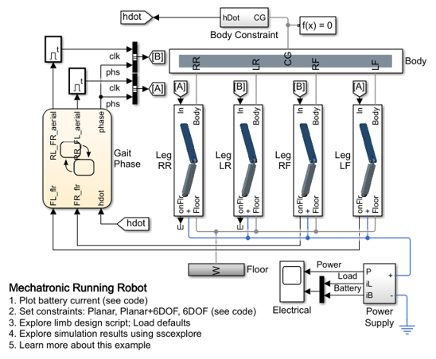
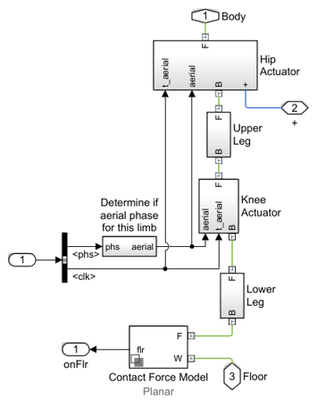
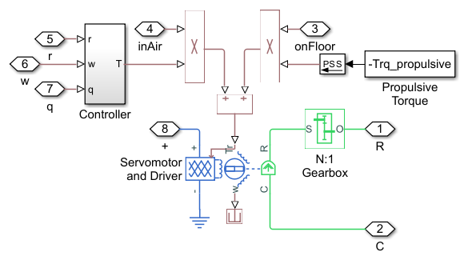
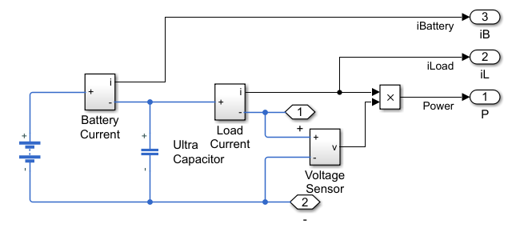
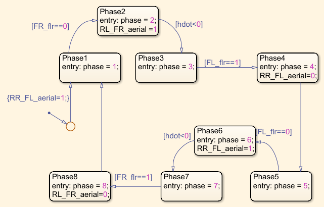
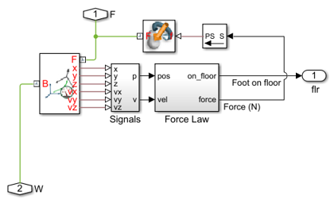
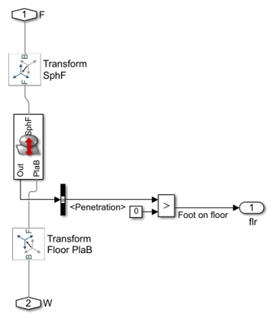
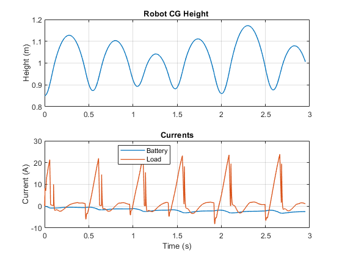

Mechatronic Running Robot
This model shows how a running or walking robot can be modeled to support system design. This four-legged robot has compliant legs that can store and re-release kinetic energy. As such it is biologically-inspired by an equestrian trotting gait. The model can be used to support selection of leg length, leg spring stiffness and actuators. An objective could be to minimise power consumption for a steady trot at some nominal average forward speed. The DC power supply is augmented with an ultracapacitor which is sized to smooth battery currents and store regenerative electrical energy.
For details on the design process, see Mechatronic Running Robot Limb Design
Contents
Model

Leg LF Subsystem
Hip Actuator Subsystem
Power Supply Subsystem
Gait Phase Subsystem
Contact Forces Between Feet and Floor
Two methods are used for modeling the contact force between the foot and the floor. One is used for the X-Y plane only, the other accommodates movement in any direction. You can select the appropriate force for your test using a parameter in the leg subsystem mask.
Planar Contact Model
The planar variant of the contact force model assumes that the leg is moving in the positive global x direction and stays within the XY-plane. Simulink is used to model a spring-damper that connects the end of the leg to the floor at the exact location where it lands. This spring-damper is deactivated when the foot leaves the floor. This idealized form of a contact model is good for initial testing.
Six Degree of Freedom Contact Model
This variant of the contact force model assumes the end of the leg is a sphere and detects collision between the sphere and the surface of the floor. It models contact and friction force between the sphere and the plane. It is valid for all six degrees of freedom.
Simulation Results from Simscape Logging
The plot below shows the current drawn by the motor and supplied by the battery as the robot runs.
